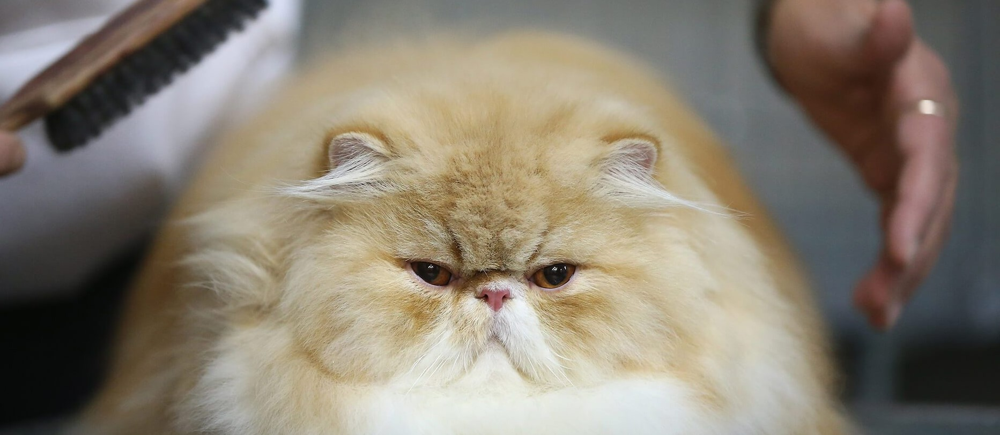

Ahhoz, hogy szép, csillogó bundával büszkélkedhessen kedvenced, érdemes rendszeresen átfésülnöd a szőrét. Ennek gyakorisága fajtánként, évszakonként változhat. Ezzel elkerülheted, hogy az összes textíliád vastagon be legyen fedve macskaszőrrel, és a tisztálkodással a cica gyomrába jutó szőr mennyiségét is csökkentheted. Érdemes tehát beszerezned egy hatékony szőrgereblyét – és egy igazán jó porszívó is jól jöhet. A lenyelt szőr mennyiségét persze nem tudod nullára csökkenteni, így naponta érdemes megkínálnod a macskát szőremésztést segítő, malátatartalmú pasztával. A macskák természetes környezetükben gyakran rágnak füvet, ebből kifejezetten cicáknak készült fűfélét ültethetsz is. Észre fogod venni, hogy a macska napjának egy jelentős részét tisztálkodással tölti. A legtöbb macska számára igen traumatikus fürdetést nem is szükséges erőltetni, hacsak nem erősen szennyeződött valamivel a bundája.
Fontos, hogy találj egy megbízható állatorvost, akihez évente egyszer az egészséges cicádat is elviszed. Ilyenkor egy általános vizsgálat, a javasolt védőoltások, szükség esetén fogkőeltávolítás, parazitamentesítés történik. A lakásban tartott macska sincs biztonságban bizonyos fertőző betegségektől, például fertőző bélgyulladás, macskanátha kórokozóját a cipőtalpunkon is hazavihetjük, bolhákat pedig akár a szomszéd kutyáján keresztül is kaphat a lépcsőházban. Kizárólag lakásban tartott macskák számára is ajánlott tehát a kombinált oltás évenkénti ismétlése, ha pedig néha az udvaron is tesz egy kört kedvenced, leukózis és veszettség ellen is érdemes védened. További információkat az állatorvostól kaphatsz. Az ivartalanítás a felelős állattartás része, a macska ivarérettségének elérése előtt, 6 hónapos kor körül érdemes elvégezni.
Szobacicád kis eséllyel küzd ilyen problémákkal, a lapockái közé cseppenthető oldalttal – ún. spot – hatékonyan tudod védeni az élősködők széles skálájával szemben. Szobacicáknak évente elegendő ismételni.
Többnyire halálos kimenetelű, erősen fertőző betegség. Légúti fertőzést általában vírusok okoznak (herpeszvírus, kalicivírus), ezek lefolyása is lehet súlyos. Kombinált oltással hatékonyan megelőzhetők, ez minden macska számára ajánlott.
Nyállal, orrváladékkal terjed, illetve fertőzött anyától születésük előtt is fertőződhetnek a cicák. Lappangó lefolyású betegségről van szó, amely az immunrendszert gyengíti, ez a fertőzése gyakoribb jelentkezéséhez, súlyosabb lefolyásához, valamint daganatos betegségek kialakulásához vezet. Elkaphatják harapott sebek által, közös etető- vagy itatótál használatával – így elsősorban a kijáró macskák veszélyeztetettek. Létezik ellene védőoltás, ez azonban nem ad 100%-os védettséget. Szűrővizsgálattal kizárható a vírus hordozása, ha pedig fertőzöttnek bizonyul a macskád, ez általában nem gátja a boldog macskaéletnek; folyamatos immunerősítéssel tehetsz az ellen, hogy a betegség manifesztációi később jelentkezzenek, és rendszeres állatorvosi vizsgálattal az esetleges baj korán felismerhető.
Ismert, gyógyíthatatlan betegség. Lakásban tartott macska fertőződési kockázata minimális, azonban visszafordíthatatlan következményekkel jár, így az oltás ilyen macskák számára is javasolt, kijáróknak pedig feltételnül.
Fentebb kifejtésre került, milyen pozitív hatással lehet egy macska az egészségedre. Aggodalmaskodó leendő szülők gyakran szabadulnak meg állataiktól leendő gyermekük biztonságára, egészségére hivatkozva. Ezen indokok általában minden tudományos alapot nélkülöznek. Biztonsággal állítható, hogy egészséges gyermeknek egészséges állat nem árt, sőt, esetükben ritkábbak az allergiás megbetegedések, és minden jótékony egyéb hatás ugyanúgy érvényes rájuk is. Nyilván 4 kg súlyú újszülött nem alkalmas fekhelye a 6 kilós macskának, erre azért oda kell figyelni.
A rettegett toxoplazmózis magzati kockázatairól tekintsd meg ezt a videót: